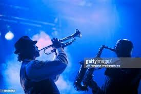
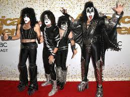

MUSIC
Music is a combination of sound that is pleasant to hear, but peoples taste differ what is
pleasant to you may not be pleasant to me.That is why we should all find what suits us not rush to
follow what is in trend
Music has evolved along the years bringing us the different genre of music
we have now.Imagine if the great musicians of each period stuck to what was in trend and did not reach to seek
outside the box we will probably not have all this genre of music
Incase you are not sure which type of musicyou like ,here are some listed few:
- the sweet old classical music
Some of the classical artist include Amadeus Mozart , Joseph Haydna and so many more
- jazz
Example of jazz are :Just the two of us,put your head on my shoulder and so on.

- Afro beat
If you're from any country in Africa you are surely familiar with this , some of this artist
are burna boy , Davido and so on

- Rock
The song one way or another i.e the cover done by one direction in 2013 is an example of rock

Music has many advantages : it sooths the soul : it reduces depressipn, it relieves stress . Alsoif its Gospel bsed it edifies you from within wethedr you
you know it or not .
Do not be bothered if you have more than one genre of music you prefer .Most people dont even have a favourite genre :What slaps ,slaps.
IF YOU ARE LOOKING FOR A PLACE TO FIND YOUR OWN STYLE OF MUSIC OR LOOKING FOR PEOPLE WHO ARE
ALSO INTERESTED IN MUSIC CLICK ON THE "CLICK HERE" BUTTON BELOW.
CLICK HERE